Kartenkunde
Arbeitsentwurf
Text: Philipp Gürth · überarbeitet mit KI
Bilder: KI-generiert
Stand: 23. November 2026
Arbeitsentwurf: Die Unterlage wird schrittweise ergänzt. Sie enthält noch offensichtliche Fehler; einige Illustrationen sind derzeit sogar grob fehlerhaft. Bitte Inhalte und Abbildungen kritisch prüfen und noch nicht ungeprüft für die Ausbildung übernehmen.
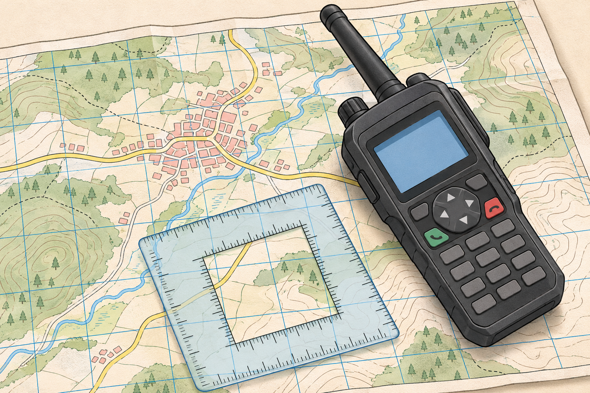
Die Illustrationen sind KI-generiert und zeigen schematische, fiktive Beispiele. Soweit Rechte an ihrer Auswahl oder Bearbeitung bestehen, werden sie unter CC0 1.0 freigegeben. Diese Freigabe gilt ausschließlich für die Illustrationen dieser Lehrunterlage; Rechte an anderen Materialien und Kartenquellen bleiben davon unberührt. Die Bilder ersetzen keine maßhaltigen Karten oder Messgeräte.
Präambel
Auch im 21. Jahrhundert gehören Kartenkunde und die Arbeit mit Papierkarten zur Grundausstattung im Bevölkerungsschutz. GPS, Galileo und digitale Karten erleichtern die Orientierung im Alltag, sind im Einsatz aber von funktionierenden Geräten, Stromversorgung und Satellitensignalen abhängig. Bei Ausfällen, Störungen oder gezielten Eingriffen können Papierkarten und einheitliche Koordinatenangaben eine verlässliche Ergänzung sein: Sie helfen Einsatzkräften, Positionen unabhängig von einer Internetverbindung zu bestimmen und über Funk verständlich weiterzugeben. Große Schadenslagen wie der Moorbrand bei Meppen und die Ahrflut zeigen, wie wichtig eine gemeinsame Orientierung und klare Kommunikation in dynamischen Einsatzgebieten sind. Auch für den Zivilschutz müssen Störungen der Satellitennavigation und Angriffe auf kritische Infrastruktur mitgedacht werden. Kartenkunde vermittelt dafür grundlegende Fähigkeiten, die im Alltag selten gebraucht werden, im Einsatz jedoch entscheidend sein können.
Was ist eine Karte
„Sie ist ein eingeebnetes, verkleinertes und generalisiertes, mit Beschreibungen und Zeichen versehenes Abbild der Erdoberfläche.“
— Wikipedia-Autorinnen und -Autoren, „Karte (Kartografie)“, lizenziert unter CC BY-SA 4.0
Für unsere Arbeit sind vier Aspekte besonders wichtig: Die Projektion überträgt die gekrümmte Erdoberfläche in die Ebene. Der Maßstab gibt das Verhältnis zwischen Entfernungen auf der Karte und in der Wirklichkeit an. Die Kartenart beschreibt Zweck und Inhalt; der Kartenstil bestimmt, wie diese Inhalte durch Farben, Linien, Zeichen und Beschriftungen dargestellt werden. Diese Aspekte betrachten wir in den folgenden Abschnitten genauer und zeigen, wie sie beim Lesen und Nutzen von Karten zusammenwirken.
Inhaltsverzeichnis
- Karten verstehen und lesen
- Himmelsrichtungen und Karte ausrichten
- Koordinaten verstehen
- Positionen mit dem Planzeiger bestimmen
- Entfernungen, Richtungen und Standorte bestimmen
- Andere in die Karte einweisen
- Exkurs: Skizzen erstellen
1. Karten verstehen und lesen
Karten helfen uns, Gelände und Einsatzgebiete zu überblicken. Entscheidend ist, die passende Karte auszuwählen, ihren Maßstab zu verstehen und ihre Zeichen richtig zu lesen.
1.1 Arten von Karten
Karten werden für unterschiedliche Aufgaben erstellt. Einige Beispiele:
- Landkarte: allgemeine Darstellung eines Landes oder einer Region; der Inhalt richtet sich nach dem jeweiligen Zweck.
- Seekarte: zeigt für die Schifffahrt wichtige Küsten, Tiefen, Fahrwasser, Seezeichen und Gefahrenstellen.
- Straßenkarte: stellt Straßen und Verbindungen für die Routenplanung dar.
- Stadtplan: zeigt Straßen, Gebäude und wichtige Einrichtungen innerhalb eines Ortes.
- Politische Karte: stellt Staaten, Grenzen und Verwaltungseinheiten in den Mittelpunkt.
- Historische Karte: zeigt Grenzen, Orte oder Landschaften zu einem früheren Zeitpunkt.
- Wanderkarte: enthält Wege, Gelände und Orientierungspunkte für die Bewegung zu Fuß.
- Topografische Karte: bildet Gelände, Gewässer, Siedlungen, Verkehrswege und weitere sichtbare Merkmale in einer festgelegten Genauigkeit ab.
- Waldbrandeinsatzkarte: bereitet für Waldbrandlagen wichtige Informationen wie Wege, Zufahrten, Wasserentnahmestellen und Gelände für den Einsatz auf.
- Feuerwehr-Laufkarte: führt innerhalb eines Gebäudes von der Brandmeldezentrale zum Melder und unterstützt die Erkundung.
- Flucht- und Rettungsplan: zeigt in einem Gebäude Fluchtwege, Ausgänge und wichtige Sicherheitseinrichtungen.
- Lagekarte: fasst für eine Führung oder einen Stab wichtige Informationen zu einer Lage in einem Gebiet zusammen.
- Lageskizze: hält eine Situation vereinfacht und meist kurzfristig fest, zum Beispiel eine Einsatzstelle und ihre Zugänge.
- Schatzkarte: markiert einen fiktiven oder tatsächlichen Zielort und dient meist einem Spiel oder einer Suche.
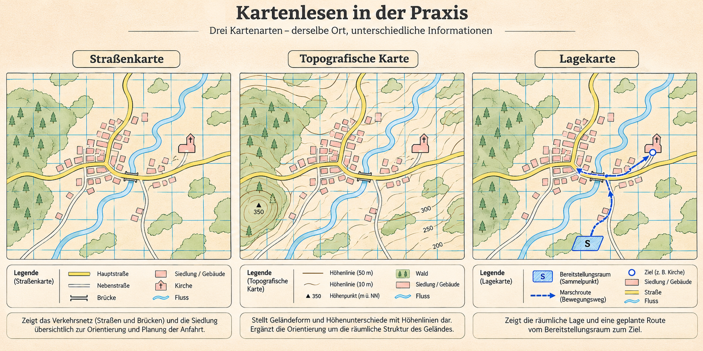
1.2 Kartentypen im Vergleich
Jeder Kartentyp hebt andere Informationen hervor. Eine politische Karte hilft, Grenzen und Zuständigkeiten zu erkennen; für die Suche eines Weges im Gelände fehlen ihr möglicherweise wichtige Geländeangaben. Ein Stadtplan zeigt das Straßennetz eines Ortes gut, während eine topografische Karte zusätzlich Gelände, Gewässer, Wege und einzelne Gebäude abbilden kann. Eine Feuerwehr-Laufkarte wiederum ist für die Orientierung im Gebäude gedacht und hilft außerhalb davon kaum weiter.
Welche dieser Karten würdest du für eine konkrete Aufgabe im Bevölkerungsschutz verwenden? Überlege, welche Informationen du dafür brauchst und welche Darstellung sie am besten liefert.
1.3 Maßstab
Der Maßstab beschreibt das Verhältnis zwischen einer Länge auf der Karte und derselben Länge in der Wirklichkeit. Bei 1 : 100.000 entspricht eine Einheit auf der Karte 100.000 gleichen Einheiten in der Landschaft. Ein Zentimeter auf der Karte steht also für 100.000 Zentimeter, das sind 1.000 Meter oder 1 Kilometer.
Gängige topografische Maßstäbe sind zum Beispiel 1 : 25.000, 1 : 50.000 und 1 : 100.000. Je kleiner die Zahl rechts vom Doppelpunkt ist, desto größer ist der Kartenmaßstab: Ein Ausschnitt in 1 : 25.000 zeigt ein kleineres Gebiet, aber mehr Einzelheiten als derselbe Ausschnitt in 1 : 100.000. Einen Maßstab, der für jede Lage am besten passt, gibt es nicht. Entscheidend sind Einsatzaufgabe, benötigter Detailgrad und Größe des Gebietes.
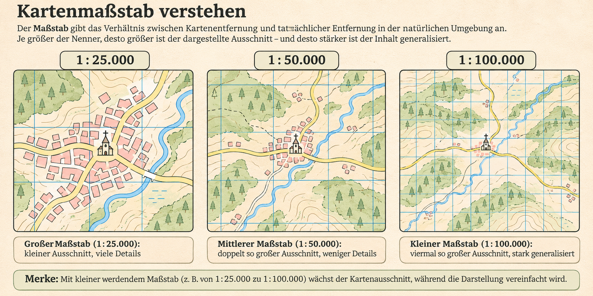
1.4 Maßstab praktisch anwenden
Bei 1 : 50.000 entsprechen 1 Zentimeter auf der Karte 50.000 Zentimetern in der Wirklichkeit, also 500 Metern. Misst eine Strecke auf der Karte 3,6 Zentimeter, ist sie in der Landschaft ungefähr 1,8 Kilometer lang:
3,6 cm × 500 m/cm = 1.800 m = 1,8 km
Für eine Entfernung entlang einer kurvigen Straße oder eines Weges wird die Strecke abschnittsweise gemessen und addiert. Das Ergebnis bleibt eine Kartenmessung: Steigungen, Umwege und unpassierbare Stellen können die tatsächliche Strecke oder Gehzeit verändern. Beim Ausdrucken muss außerdem die Seitengröße stimmen; wird eine Karte verkleinert oder vergrößert, ändert sich ihr tatsächlicher Maßstab.
1.5 Kartenlegende
Die Kartenlegende erklärt, was Farben, Linien und Zeichen auf einer Karte bedeuten. Sie ist nötig, um die Darstellung richtig zu lesen: Ein Zeichen kann für ein Gebäude, eine Anlage oder einen besonderen Geländepunkt stehen; Linien können je nach Farbe, Muster und Strichart unterschiedliche Wege, Grenzen oder Leitungen darstellen. Farben allein reichen nicht immer zur sicheren Deutung aus.
Als Beispiel eignet sich die Legende der DTK 50 Niedersachsen. An ihr lässt sich zeigen, wie Gebäude, Verkehrswege, Gewässer, Höheninformationen und besondere Objekte dargestellt werden. Vergleiche ein Kartenzeichen immer mit der Legende des verwendeten Kartenblatts, denn Zeichen und Inhalte können sich je nach Kartenwerk und Ausgabe unterscheiden.
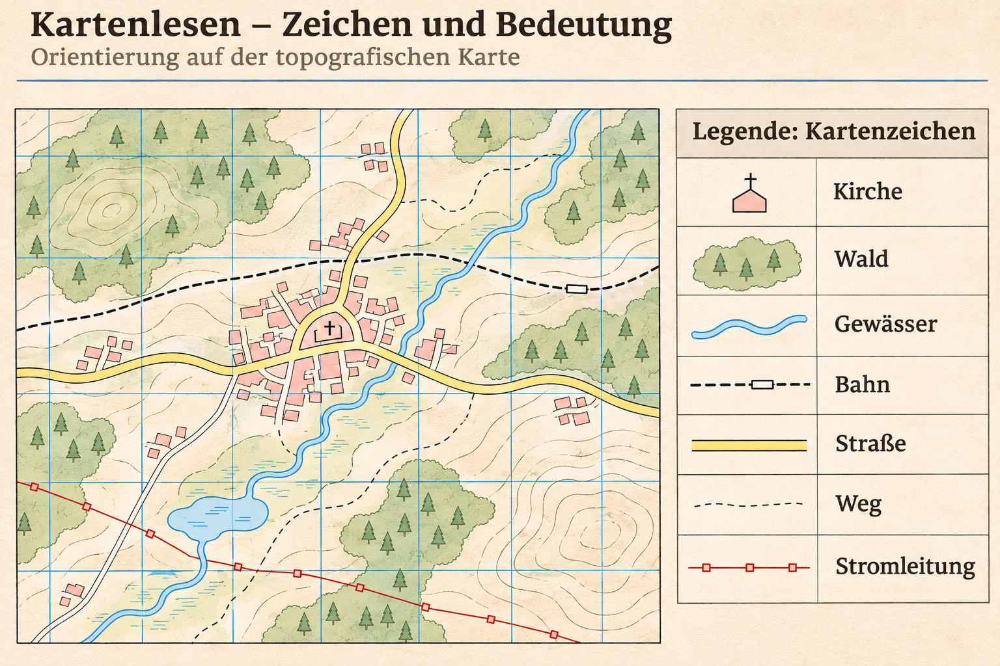
1.6 Höhenlinien und Geländeformen lesen
Höhenlinien verbinden Punkte gleicher Höhe. Ihr Höhenabstand heißt Äquidistanz und steht in der Legende oder am Kartenrand. Liegt er beispielsweise bei 10 Metern, beträgt der Höhenunterschied zwischen zwei benachbarten regulären Höhenlinien 10 Meter. Zusätzliche Hilfshöhenlinien können einen kleineren Abstand darstellen; beachte deshalb auch die Linienart.
Je enger die Höhenlinien beieinanderliegen, desto steiler ist das Gelände. Weit auseinanderliegende Linien zeigen einen flacheren Hang. Geschlossene Linien mit nach innen steigenden Höhenwerten kennzeichnen eine Kuppe. Bei einer Senke nehmen die Höhen nach innen ab; zusätzliche Zeichen können die Vertiefung kenntlich machen. Täler und Rücken erkennst du am Verlauf mehrerer Linien und den benachbarten Höhenwerten. In einem Tal weisen die V-förmigen Einbuchtungen der Höhenlinien häufig bergauf.
Höhenzahlen geben die Höhe über der verwendeten Höhenbezugsfläche an, nicht die Höhe über dem unmittelbar benachbarten Gelände. Bei entsprechend ausgerichteten Höhenlinienbeschriftungen zeigt die Oberseite der Zahl bergauf. Prüfe die Darstellung am konkreten Kartenwerk und nutze weitere Höhenangaben zur Kontrolle.
Für die Einsatzplanung helfen Höhenlinien beispielsweise dabei, steile Zufahrten, günstige Wege oder Höhenunterschiede einer Wasserförderstrecke zu erkennen. Die Karte ersetzt dabei keine Erkundung der tatsächlichen Befahrbarkeit.
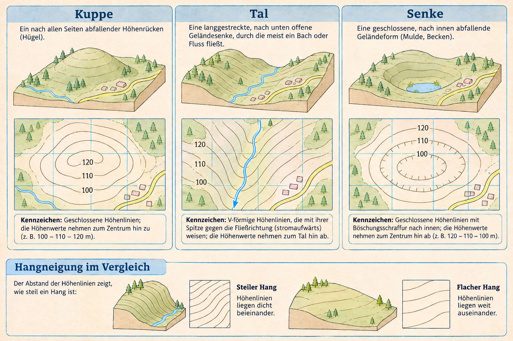
1.6.1 Ein Höhenprofil erstellen
Zeichne die gewünschte Strecke auf der Karte ein und markiere ihre Schnittpunkte mit den Höhenlinien. Übertrage die Entfernung jedes Schnittpunkts vom Start auf eine waagerechte Achse und seine Höhe auf eine senkrechte Achse. Verbinde die Punkte zu einem Höhenprofil. Es zeigt Anstiege, Gefälle und Zwischenkuppen entlang der Strecke. Werden Höhe und Entfernung unterschiedlich skaliert, erscheint das Gelände steiler als in Wirklichkeit; kennzeichne diese Überhöhung.
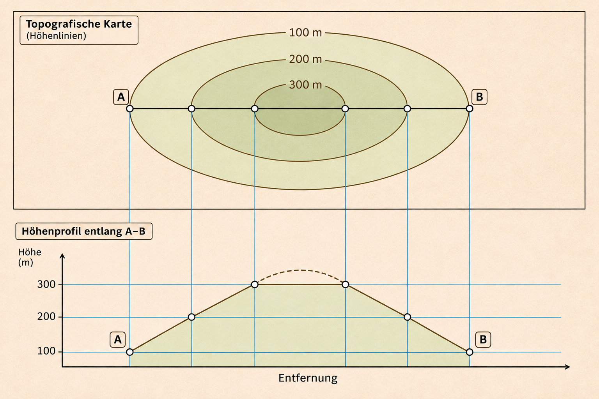
1.7 Karten im Katastrophenschutz
Im Bevölkerungsschutz wird die Karte nach der Aufgabe ausgewählt. Unterschiedliche Maßstäbe und Kartentypen ergänzen sich:
- Autoatlas: bietet einen Überblick über das überregionale Straßennetz und unterstützt die Routenplanung, zum Beispiel für einen geschlossenen Verband. Maßstab, Aktualität und mögliche Einschränkungen der Strecke müssen am konkreten Atlas geprüft werden.
- Topografische Karte 1 : 50.000: eignet sich häufig als gemeinsame Arbeitsgrundlage bei Flächenlagen, etwa bei Waldbränden. Sie verbindet einen größeren Gebietsausschnitt mit erkennbaren Orten, Wegen, Gewässern und Geländeformen.
- Topografische Karte 1 : 25.000 oder größerer Maßstab: zeigt mehr Einzelheiten auf kleinerem Gebiet und kann bei schwierigem Gelände, bei Suchgebieten oder bei der Planung genauer Fußwege hilfreich sein.
- Stadtplan: unterstützt die Orientierung im bebauten Gebiet und zeigt dort häufig Straßennamen und Hausnummern übersichtlich.
- Lagekarte, zum Beispiel in 1 : 500 oder 1 : 1.000: stellt eine Einsatzlage, Abschnitte, Kräfte und wichtige Punkte im Führungsraum zusammen. Maßstab und Kartenausschnitt richten sich nach der Größe der Lage.
- Lageskizze: hält eine örtliche Situation schnell und vereinfacht fest. Eine klare Orientierung, verständliche Zeichen und eine kurze Legende machen sie für andere nachvollziehbar.
Prüfe bei jeder Karte den Kartenstand, die Legende und das Koordinatengitter. Eine Karte ist nur dann hilfreich, wenn sie zur Aufgabe passt und alle Beteiligten dieselbe Darstellung verstehen.
Merksatz: Die richtige Karte für den richtigen Job.
1.8 Vertiefung: Wie wird aus einer Kugel eine flache Karte?
Die Erde ist annähernd kugelförmig, eine gedruckte Karte liegt jedoch auf einer Ebene. Um die gekrümmte Erdoberfläche darauf abzubilden, werden Orte und Geländeformen mithilfe einer Kartenprojektion mathematisch übertragen. Dabei muss die Darstellung vereinfacht werden: Keine Projektion kann gleichzeitig alle Formen, Winkel, Flächen und Entfernungen unverändert wiedergeben. Welche Verzerrung in Kauf genommen wird, hängt deshalb davon ab, wofür die Karte gebraucht wird.
1.8.1 Die Erdoberfläche in Streifen
Eine Möglichkeit, die Übertragung anschaulich zu machen, ist ein Globus, der entlang der Längenkreise in schmale Streifen geteilt wird. Jeder Streifen lässt sich einzeln in eine Ebene übertragen. Je schmaler der betrachtete Bereich ist, desto geringer bleiben die Verzerrungen innerhalb dieses Bereichs. Das UTM-System nutzt dieses Prinzip: Es teilt die Erde in 60 Zonen, die jeweils sechs Längengrade breit sind. Jede Zone wird mit einer eigenen transversalen Mercatorprojektion abgebildet. So eignet sich das Verfahren gut für genaue Karten in einem begrenzten Gebiet.
1.8.2 Jede Projektion verzerrt
Beim Übertragen einer gekrümmten Oberfläche auf eine Ebene lassen sich Verzerrungen nicht vermeiden. Verschiedene Projektionen erhalten unterschiedliche Eigenschaften:
- Winkeltreue Projektionen erhalten lokale Winkel und damit kleine Formen. Die Mercatorprojektion ist winkeltreu. Sie wurde für die Navigation auf See entwickelt: Eine Route mit gleichbleibendem Kompasskurs, eine sogenannte Loxodrome, erscheint als gerade Linie. Dafür wachsen Flächen und Entfernungen zu den Polen hin stark an.
- Flächentreue Projektionen stellen Größenverhältnisse von Flächen korrekt dar. Dafür werden Formen oder Winkel stärker verändert. Die Equal-Earth-Projektion ist eine flächentreue Darstellung für Weltkarten.
- Längentreue Projektionen erhalten Entfernungen nur in bestimmten Richtungen, von bestimmten Punkten oder entlang bestimmter Linien. Sie bilden nicht alle Entfernungen auf der ganzen Karte unverändert ab.
Der Vergleich von Mercator und Equal Earth zeigt, warum die Projektion zum Zweck passen muss: In einer Mercatorkarte wirkt Grönland ähnlich groß wie Afrika, obwohl Afrika tatsächlich rund vierzehnmal so groß ist. Equal Earth zeigt die Flächenverhältnisse deutlich realistischer, verändert dafür aber die Formen. Die UN-Generalversammlung hat 2026 in Resolution A/RES/80/307 Equal Earth als geeignete Möglichkeit für Weltkarten benannt und empfiehlt flächentreue Darstellungen dort, wo die Größenverhältnisse der Kontinente wichtig sind. Die Resolution erklärt keine Projektion für alle Zwecke zur einzig richtigen und hebt die besonderen Anforderungen der Navigation ausdrücklich nicht auf. Resolution A/RES/80/307 (PDF, Vereinte Nationen)
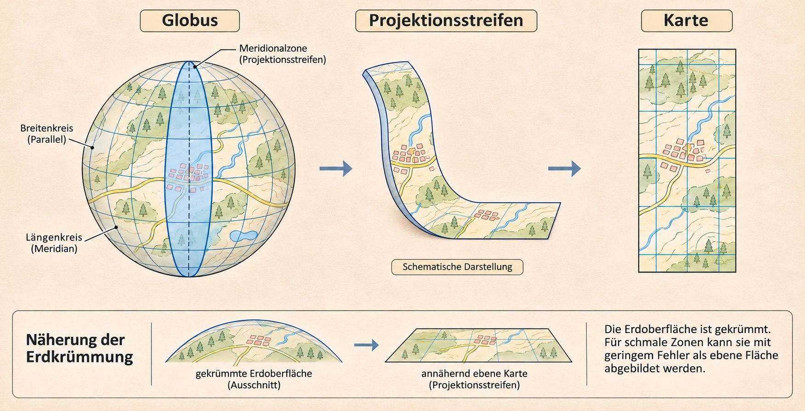
2. Himmelsrichtungen und Karte ausrichten
2.1 Norden
Die vier Haupthimmelsrichtungen sind Norden, Osten, Süden und Westen. Auf einer üblichen, nach Norden ausgerichteten Karte liegt Osten rechts, Süden unten und Westen links. Zwischen den Hauptrichtungen liegen die Zwischenhimmelsrichtungen: Nordost, Südost, Südwest und Nordwest.
Für die Kartenarbeit müssen wir außerdem drei Nordrichtungen unterscheiden:
2.1.1 Geografischer Norden
Der geografische Norden zeigt zum geografischen Nordpol. Die Längenkreise der Erde verlaufen in diese Richtung. Er wird auch als wahrer Norden bezeichnet.
2.1.2 Magnetischer Norden
Der magnetische Norden ist die Richtung, in die sich eine Kompassnadel am jeweiligen Ort ausrichtet. Er liegt nicht genau auf dem geografischen Nordpol und verändert seine Lage mit der Zeit. Der Winkel zwischen geografischem und magnetischem Norden wird Missweisung genannt.
2.1.3 Gitternorden
Der Gitternorden folgt den senkrechten Linien des Koordinatengitters auf der Karte. Bei UTM-Karten verlaufen diese Linien parallel zur Nordrichtung des Gitters. Je nach Lage kann der Gitternorden leicht vom geografischen Norden abweichen.
Auf einer Karte können geografischer Norden, magnetischer Norden und Gitternorden mit Pfeilen und ihren jeweiligen Abweichungen dargestellt sein. Achte darauf, auf welchen Norden sich die Karte und die verwendete Arbeitsweise beziehen. Beim Einnorden mit dem Kompass muss die örtliche Missweisung berücksichtigt werden, wenn eine genaue Ausrichtung erforderlich ist.
2.2 Gradeinteilung
Richtungen lassen sich als Winkel angeben. Bei der üblichen Peilung beginnt die Zählung im Norden bei 0° und läuft im Uhrzeigersinn einmal um den Vollkreis bis 360°. Osten liegt bei 90°, Süden bei 180° und Westen bei 270°. Nordost liegt beispielsweise bei 45°, Südost bei 135°, Südwest bei 225° und Nordwest bei 315°. 0° und 360° bezeichnen dieselbe Richtung.
Eine Winkelangabe ist nur eindeutig, wenn klar ist, auf welchen Norden sie bezogen ist: geografischen Norden, magnetischen Norden oder Gitternorden. Bei einer Kartenarbeit mit UTM-Gitter ist der Gitternorden oft die praktische Bezugsrichtung; bei einem Kompass kann die magnetische Missweisung eine Rolle spielen.
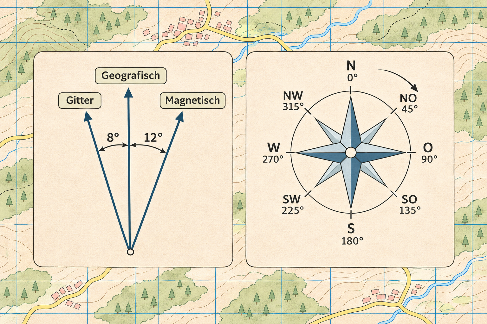
2.3 Mit dem Kompass arbeiten
Ein Kartenkompass besitzt eine Magnetnadel, eine drehbare Kompassdose mit Winkelskala und je nach Bauart eine Anlegekante und einen Richtungspfeil. Halte ihn waagerecht und warte, bis sich die Nadel beruhigt hat. Fahrzeuge, Metallgegenstände, Magnete und elektrische Anlagen können die Anzeige verfälschen. Halte Abstand und prüfe die Richtung bei einem vermuteten Störeinfluss an einem anderen Standort erneut.
2.3.1 Die Karte einnorden
Beim Einnorden richtest du die Karte so aus, dass ihre Richtungen mit dem Gelände übereinstimmen. Ohne Kompass kannst du bekannte Objekte nutzen: Suche deinen Standort und einen eindeutig erkennbaren Bezugspunkt auf der Karte und drehe sie, bis die Verbindungslinie in Richtung des tatsächlichen Objekts zeigt. Kontrolliere die Ausrichtung möglichst an einem zweiten Objekt.
Mit einem Kartenkompass legst du die Anlegekante an eine senkrechte Gitterlinie. Der Richtungspfeil zeigt zum nördlichen Kartenrand. Stelle die Kompassdose für Gitternord ein und drehe Karte und Kompass gemeinsam, bis die Magnetnadel zur dafür vorgesehenen Nordmarkierung passt. Berücksichtige dabei die örtliche Abweichung zwischen magnetischem Norden und Gitternorden nach der Anleitung des Kompasses und den aktuellen Kartenangaben. Verwechsle die Nordspitze der Nadel nicht mit ihrem südlichen Ende.
Die Abweichung zwischen geografischem und magnetischem Norden heißt Deklination oder Missweisung. Zwischen geografischem Norden und Gitternorden liegt die Meridiankonvergenz. Für das Einnorden am UTM-Gitter ist die daraus folgende Nadelabweichung zwischen magnetischem Norden und Gitternorden entscheidend. Eine ältere magnetische Winkelangabe muss für den aktuellen Zeitpunkt geprüft werden.
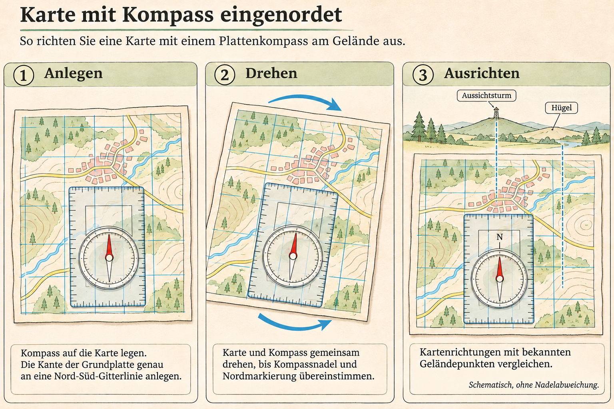
2.3.2 Eine Richtung von der Karte ins Gelände übertragen
Verbinde Start und Ziel auf der Karte. Lege den Kompass mit dem Richtungspfeil zum Ziel an diese Linie. Drehe die Kompassdose, bis ihre Orientierungslinien parallel zum Nord-Süd-Gitter liegen und die Nordmarkierung nach Kartennorden zeigt. Lies den Richtungswinkel ab und berücksichtige für die Übertragung auf den Kompass die örtliche Nadelabweichung.
Nimm den Kompass von der Karte und halte ihn waagerecht vor dich. Drehe dich, bis die Nadel zur eingestellten Nordmarkierung passt. Der Richtungspfeil zeigt nun in die Zielrichtung. Wähle dort ein gut erkennbares Zwischenziel. Umgekehrt kannst du einen Geländepunkt anpeilen und die gemessene Richtung nach entsprechender Korrektur in die Karte übertragen. Die genaue Bedienung hängt von der Bauart des Kompasses ab.
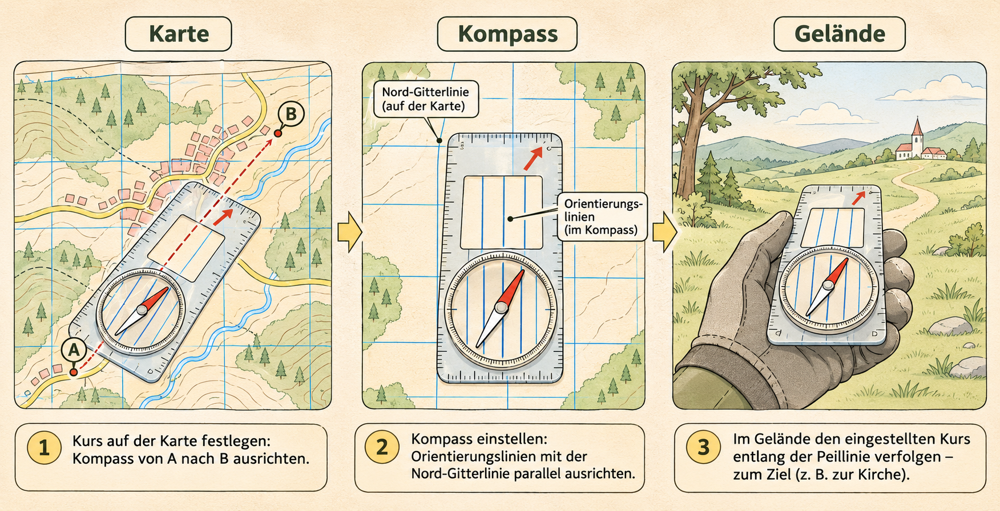
2.4 Exkurs: Teilstricheinteilung im Militär
Im militärischen Bereich werden Winkel auch in Strich angegeben. Bei der hier beschriebenen 6400er-Einteilung wird der Vollkreis in 6400 Strich geteilt. Ein rechter Winkel entspricht 1600 Strich; damit liegen Osten bei 1600, Süden bei 3200 und Westen bei 4800 Strich. Ein Strich entspricht 0,05625°, ein Grad ungefähr 17,78 Strich.
Die Einteilung ist für grobe Richtungs- und Entfernungsbeziehungen praktisch: Ein Strich entspricht näherungsweise einem Meter seitlicher Abweichung auf 1000 Meter Entfernung. Es gibt auch andere Teilungen, zum Beispiel eine 6000er-Einteilung. Deshalb immer prüfen, welche Skala auf dem verwendeten Kompass oder Gerät angegeben ist.
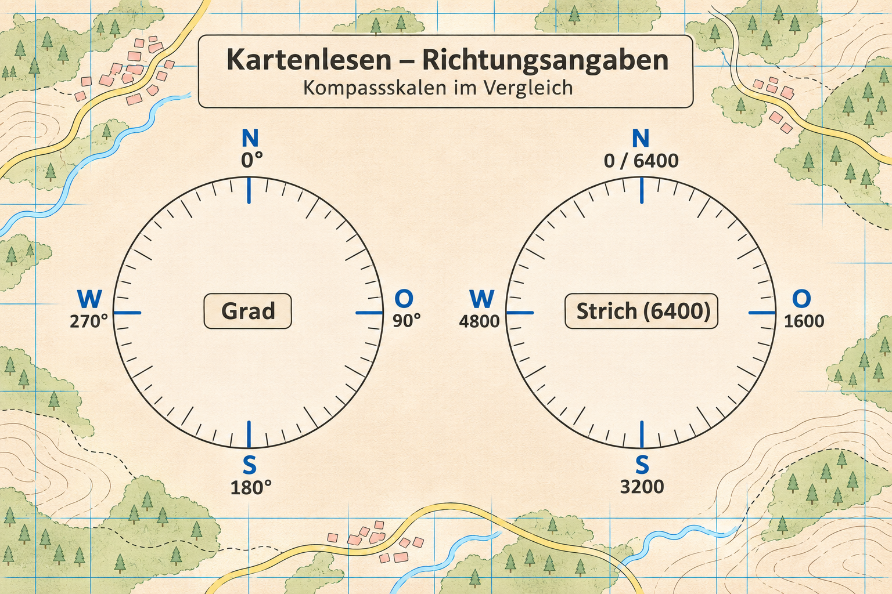
3. Koordinaten verstehen
Eine Position lässt sich mit verschiedenen Koordinatenformaten angeben. Damit alle dieselbe Stelle finden, müssen Sender und Empfänger dasselbe Format verwenden und die Koordinate vollständig übermitteln. Eine Ziffernfolge allein reicht nicht: Je nach Format werden zum Beispiel Hemisphäre, Zone, 100-km-Quadrat oder Bezugssystem benötigt.
3.1 Gängige Koordinatenformate
- Grad, Minuten und Sekunden (DMS): geografische Koordinaten als Winkelangaben, zum Beispiel 53° 40′ 21″ N, 7° 52′ 58″ E. Die Buchstaben N, S, E und W kennzeichnen die Himmelsrichtungen. Dieses Format und verwandte Schreibweisen mit Dezimalminuten werden in der Seefahrt verwendet.
- Dezimalgrad: geografische Breite und Länge als Dezimalzahlen, zum Beispiel 53.672555° N, 7.882629° E. Viele digitale Karten und Navigationsdienste, darunter Google Maps, können solche Angaben anzeigen oder entgegennehmen. Beim Übermitteln müssen Reihenfolge, Vorzeichen beziehungsweise Himmelsrichtung und Bezugssystem klar sein.
- UTM: eine Position wird innerhalb einer nummerierten Zone mit metrischen Ost- und Nordwerten angegeben. Das Koordinatengitter findet sich auf vielen topografischen und Wanderkarten und lässt sich direkt mit Planzeiger oder Maßstab nutzen.
- UTMREF / MGRS: ergänzt die UTM-Zone um ein bezeichnetes 100-km-Quadrat und teilt die Position darin mit Ost- und Nordwerten mit. Das Format ist für Kartenarbeit und Funk gut geeignet; die Anzahl der Ziffern bestimmt die angegebene Genauigkeit. MGRS ist die militärisch verwendete Form, UTMREF die im deutschsprachigen Raum geläufige Bezeichnung.
- What3Words (W3W): ordnet jedem kleinen Gebiet eine Kombination aus drei Wörtern zu. Das kann eine Ortsangabe in einer digitalen Lage schnell verständlich machen. Zum Nachschlagen und Umwandeln wird jedoch in der Regel der Dienst samt funktionsfähigem Gerät und Internetverbindung benötigt.
- Planquadrat: Buchstaben und Zahlen bezeichnen ein Rasterfeld auf einem bestimmten Stadtplan oder einer Einsatzkarte, zum Beispiel C4. Das ist einfach und schnell, aber nur innerhalb genau dieses Kartenblatts eindeutig; ein Planquadrat ist kein weltweit einheitliches Koordinatensystem.
3.2 Welche Formate sind im Bevölkerungsschutz sinnvoll?
- UTMREF / MGRS eignet sich als gemeinsamer Standard für die Arbeit mit topografischen Karten und die Übermittlung von Positionen. Das metrische Gitter ist auf vielen Karten vorhanden, die Koordinaten lassen sich ohne Internet ablesen und die Genauigkeit kann über die Ziffernzahl an die Aufgabe angepasst werden.
- Grad, Minuten und Sekunden bleiben für die Seefahrt und maritime Einsätze wichtig, weil geografische Koordinaten dort gebräuchlich sind. Sie können auch im Bevölkerungsschutz eine sinnvolle Ergänzung sein, etwa wenn Informationen von Schifffahrt oder maritimen Stellen übernommen werden. Dabei muss das Format eindeutig gesprochen und notiert werden.
- Dezimalgrad ist praktisch, wenn eine Position aus einer digitalen Karte oder einem Smartphone übernommen wird. Vor der Weitergabe sollte geprüft werden, ob Breite und Länge in der richtigen Reihenfolge stehen und ausreichend Nachkommastellen enthalten.
- What3Words wird inzwischen auch in Katastrophenschutzlagen häufig als zusätzliche Ortsangabe verwendet und kann das Auffinden eines schwer beschreibbaren Zugangspunkts erleichtern. Es ist aber kein vollständiger Ersatz für UTMREF: Zum Abruf und zur Umwandlung müssen der Dienst, das Endgerät und die nötige Infrastruktur – insbesondere Stromversorgung und Internetzugang – verfügbar sein. Übermittle bei Bedarf zusätzlich eine Koordinate in einem vereinbarten, auf der Papierkarte nutzbaren Format.
- Planquadrate können innerhalb eines gemeinsam verwendeten Stadtplans oder einer Einsatzkarte schnell zum Ziel führen. Bei organisationsübergreifenden oder überregionalen Lagen sind sie ungeeignet, wenn nicht alle Beteiligten dasselbe Kartenblatt mit demselben Raster nutzen.
Für die gemeinsame Kartenarbeit in dieser Unterlage gilt UTMREF als Standard. Andere Formate bleiben wichtige Ergänzungen, wenn sie zur Karte, zum Einsatzgebiet oder zu den verfügbaren Informationswegen passen.
3.3 UTM und UTMREF unterscheiden
UTM steht für *Universal Transverse Mercator*. Es beschreibt eine Position mit einer Zonenangabe und zwei metrischen Werten: dem Ostwert (Easting) und dem Nordwert (Northing). Die Werte beziehen sich auf das Koordinatengitter der jeweiligen Zone.
UTMREF baut darauf auf und ergänzt die Zone um ein Buchstabenpaar für das 100-km-Quadrat. Innerhalb des Quadrats folgen Ost- und Nordanteil als Ziffern. MGRS verwendet denselben Grundaufbau und ist vor allem aus dem militärischen Bereich bekannt. Bei der Weitergabe müssen Format und Zone erhalten bleiben, damit eine Koordinate nicht missverstanden wird.
Eine vollständige UTMREF-Angabe besteht damit aus dem Zonenfeld, dem Buchstabenpaar des 100-km-Quadrats und zwei gleich langen Zahlenblöcken: zuerst dem Ostwert, dann dem Nordwert. Zum Beispiel bezeichnet 32U ME 4130 3059 das Zonenfeld 32U, das 100-km-Quadrat ME sowie die Werte 4130 Ost und 3059 Nord innerhalb dieses Quadrats. Die Ziffern werden beim Ablesen und Übermitteln immer paarweise in der Reihenfolge Ost vor Nord angegeben.
3.4 UTM: die Erde in Zonen
Das UTM-System teilt die Erde zwischen 80° südlicher und 84° nördlicher Breite in 60 Zonen. Jede Zone ist sechs Längengrade breit und wird mit einer transversalen Mercatorprojektion abgebildet. Ihre Nummer und der zugehörige Buchstabe grenzen den Bereich ein, in dem die folgenden Koordinatenwerte gelten. Deshalb gehört die Zone immer zu einer vollständigen UTM- oder UTMREF-Angabe.
3.5 Die 100-km-Quadrate – Beispiel ME
Bei UTMREF/MGRS ist jede Zone in 100-km-Quadrate eingeteilt. Ein Buchstabenpaar kennzeichnet das jeweilige Quadrat. Auf einer Karte mit eingezeichnetem UTMREF-Gitter lassen sich die Quadrate am Kartenrand oder in der Gitterbeschriftung ablesen. Das Quadrat grenzt den Suchbereich zunächst auf eine Fläche von 100 × 100 Kilometern ein.
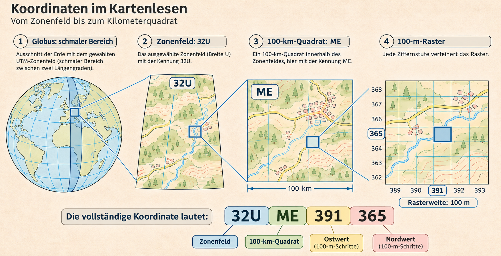
3.6 Bezugssysteme: Vorsicht bei alten Karten
Moderne Satellitennavigation arbeitet üblicherweise mit WGS84; aktuelle amtliche Karten in Deutschland verwenden meist ETRS89. Für unsere Kartenarbeit mit Planzeiger und die übliche Navigation können beide praktisch gleich behandelt werden. Information der Landesvermessung Sachsen-Anhalt
Bei alten Karten können dagegen andere Bezugssysteme wie ED50 oder das Potsdam-Datum verwendet sein. Dieselben Koordinatenzahlen können dann einen anderen Ort bezeichnen. Prüfe bei älterem oder unbekanntem Kartenmaterial die Angaben am Kartenrand und die Einstellungen des Navigationsgeräts. Übernimm Koordinaten nicht ungeprüft und verwende keine pauschale Verschiebung als Umrechnung.
4. Positionen mit dem Planzeiger bestimmen
4.1 Das Kilometerquadrat finden
Lies zuerst am Kartenrand die UTMREF-Gitterwerte ab. Die Ostwerte stehen am unteren Kartenrand, die Nordwerte am seitlichen Kartenrand. Suche das 1-km-Quadrat, in dem der Punkt liegt: Der Ostwert gibt die senkrechte Gitterlinie links vom Quadrat an, der Nordwert die waagerechte Gitterlinie unterhalb davon.
Im Beispiel 32U ME 39 36 grenzen der Ostwert 39 und der Nordwert 36 das Kilometerquadrat ein. Die vollständige Angabe enthält außerdem das Zonenfeld 32U und das 100-km-Quadrat ME.
4.2 Den Planzeiger anlegen
Lege den Planzeiger so auf die Karte, dass seine waagerechte Skala genau auf der unteren waagerechten Gitterlinie des gefundenen Kilometerquadrats liegt. Richte die senkrechte Skala an der linken Begrenzung des Quadrats aus. Prüfe, dass du die Skala für den Kartenmaßstab verwendest; eine Skala für 1 : 25.000 passt nicht zu einer Karte im Maßstab 1 : 50.000.
4.3 Zum Punkt verschieben
Verschiebe den Planzeiger waagerecht, bis seine senkrechte Skala durch den gesuchten Punkt läuft. Die waagerechte Ausrichtung an der Gitterlinie bleibt dabei erhalten. Lies an der waagerechten Skala ab, wie weit der Punkt östlich von der linken Quadratlinie liegt.
4.4 Ost- und Nordanteil ablesen
Lies zuerst den Ostanteil und danach den Nordanteil ab. Im Beispiel liegt der Punkt 0,1 km östlich der linken Begrenzung und 0,5 km nördlich der unteren Begrenzung. Zu den Quadratwerten 39 und 36 kommen deshalb jeweils die Zehntelkilometer-Ziffern 1 und 5 hinzu: 32U ME 391 365. Das ist eine UTMREF-Koordinate mit drei Ziffern je Wert und bezeichnet ein 100-m-Rasterfeld. Merke dir die Reihenfolge: erst Osten, dann Norden.
Die Anzahl der Ziffern je Zahlenblock bestimmt die Größe des bezeichneten Rasterfelds: zwei Ziffern je Wert stehen für 1 km, drei Ziffern für 100 m und vier Ziffern für 10 m. Beim Planzeiger muss die abgelesene Genauigkeit zur Karte passen. Auf einer gedruckten Karte im Maßstab 1 : 50.000 sind meist höchstens drei Ziffern je Wert zuverlässig ablesbar; bei 1 : 25.000 sind meist vier Ziffern möglich. Mehr Ziffern machen eine ungenaue Karte oder Messung nicht genauer.
Merksatz: Ran an den Baum, rauf auf den Baum.
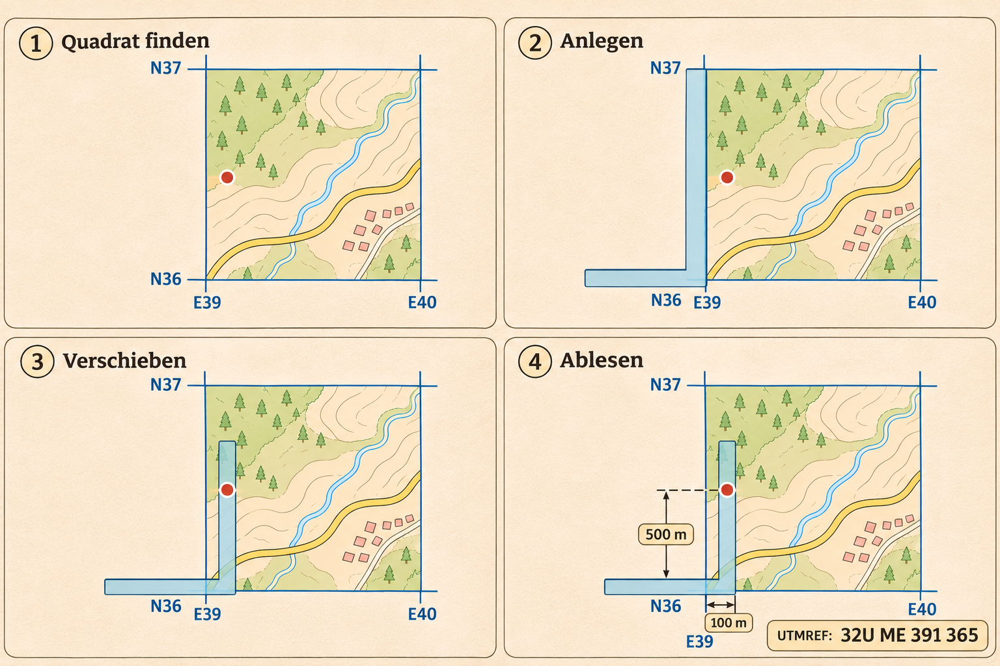
4.5 Eine vorgegebene Koordinate auf der Karte finden
Beim Suchen gehst du den Weg umgekehrt. Prüfe zuerst Zonenfeld und 100-km-Quadrat. Teile dann beide Zahlenblöcke in den Kilometeranteil und die feineren Stellen auf. Bei 32U ME 391 365 sind das die Gitterwerte 39 Ost und 36 Nord sowie 100 m nach Osten und 500 m nach Norden innerhalb dieses Kilometerquadrats.
Suche die senkrechte Gitterlinie 39 und die waagerechte Gitterlinie 36. Lege die passende Skala des Planzeigers an die untere Gitterlinie und verschiebe ihn so, dass die waagerechte Skala an der linken Quadratbegrenzung 100 m anzeigt. An der senkrechten Skala findest du den gesuchten Punkt 500 m oberhalb der unteren Gitterlinie. Kontrolliere das Ergebnis anhand der Kartenzeichen: Passt der Punkt zum genannten Ort oder Objekt? Eine dreistellige Angabe je Wert bezeichnet ein 100-m-Feld und legt daher nicht jeden einzelnen Meter darin fest.
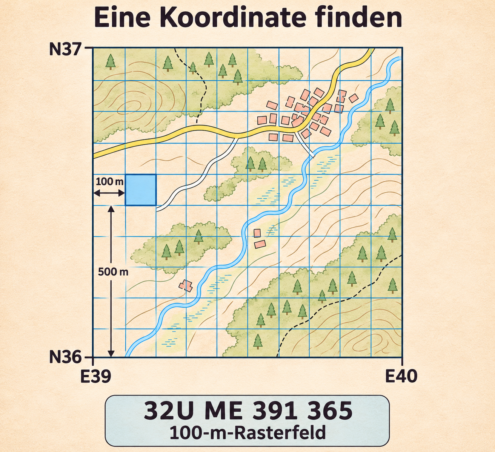
5. Entfernungen, Richtungen und Standorte bestimmen
Für die praktische Arbeit werden Entfernungen und Richtungen meist direkt auf der Karte gemessen. Rechnen dient als Ergänzung und Kontrolle.
5.1 Entfernung und Richtung auf der Karte messen
Verbinde Start und Ziel mit einer dünnen Linie. Miss die Kartenstrecke mit einem Lineal und rechne sie mithilfe des Maßstabs in die Entfernung im Gelände um. Alternativ kannst du eine passende Maßstabsleiste verwenden. Für Straßen und Wege misst du mehrere kurze Teilstrecken und addierst sie.
Lege für die Richtung einen Kartenwinkelmesser mit seinem Mittelpunkt auf den Startpunkt und richte seine Nordlinie parallel zum Nord-Süd-Gitter aus. Lies den Winkel der Verbindungslinie im Uhrzeigersinn ab Gitternord ab. Mit einem geeigneten Kartenkompass funktioniert dies wie in Abschnitt 2.3.2 beschrieben. Für die Übertragung ins Gelände beachtest du zusätzlich die örtliche Nadelabweichung.
5.2 Die Entfernung mit dem Satz des Pythagoras berechnen
Liegen zwei Punkte im selben 100-km-Quadrat, ziehe ihre Ostwerte voneinander ab und ebenso ihre Nordwerte. So erhältst du die Ost-West- und Nord-Süd-Anteile der Strecke. Diese bilden die beiden Katheten eines rechtwinkligen Dreiecks. Die gerade Entfernung zwischen den Punkten ist die Hypotenuse und wird mit dem Satz des Pythagoras berechnet: Entfernung = √(ΔOst² + ΔNord²).
Beispiel:
- Punkt A: 32U ME 4130 3059
- Punkt B: 32U ME 4150 3047
- Unterschied nach Osten: 20 Schritte × 10 m = 200 m
- Unterschied nach Norden: 12 Schritte × 10 m = 120 m
Die Luftlinienentfernung im Gitter ergibt sich aus diesen beiden Anteilen: √(200² + 120²) ≈ 233 m. Das ist die gerade Entfernung zwischen den Punkten. Eine Strecke entlang von Straßen oder Wegen kann länger sein.
5.3 Einen Winkel aus den Koordinaten berechnen
Aus denselben Ost- und Nordunterschieden lässt sich auch die Richtung von Punkt A nach Punkt B bestimmen. Der Winkel wird als Richtungswinkel im Uhrzeigersinn ab Norden angegeben. Mathematisch gilt Winkel = atan2(ΔOst, ΔNord); je nach Vorzeichen muss das Ergebnis in den Bereich 0° bis 360° übertragen werden. Im Beispiel geht es 200 m nach Osten und 120 m nach Süden. Die Richtung beträgt damit ungefähr 121° ab Norden.
Für die praktische Arbeit ist es meist einfacher und anschaulicher, Richtung und Entfernung grafisch auf der Karte zu bestimmen: Punkte verbinden, Nordrichtung beachten und Winkel beziehungsweise Strecke mit geeignetem Kartenwerkzeug abnehmen. Eine rechnerische Lösung ist hilfreich zur Kontrolle oder wenn genaue Koordinatenwerte vorliegen.
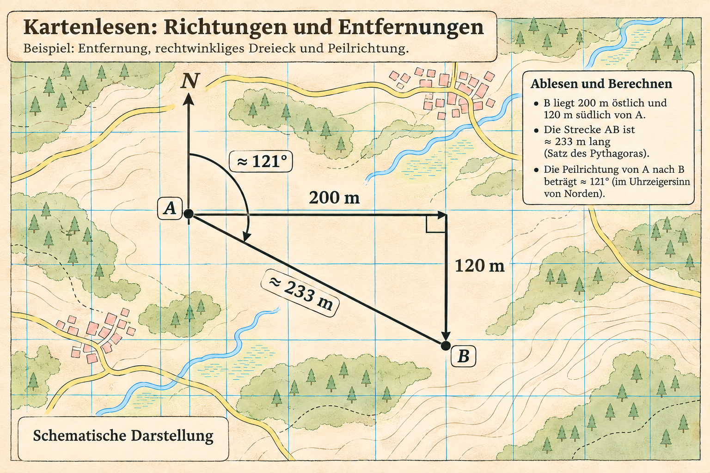
5.4 Über mehrere 100-km-Quadrate hinweg rechnen
Die kurzen Zahlenblöcke einer UTMREF-Koordinate gelten nur innerhalb des angegebenen 100-km-Quadrats. Liegen die Punkte in verschiedenen Quadraten, darfst du diese Zahlenblöcke nicht direkt voneinander abziehen. Ermittle zuerst für beide Punkte vollständige UTM-Ost- und Nordwerte in Metern, indem du jeweils den Versatz des 100-km-Quadrats berücksichtigst. Danach berechnest du ΔOst und ΔNord wie oben und kannst Entfernung und Richtung bestimmen.
Das funktioniert direkt, wenn beide Punkte in derselben UTM-Zone liegen. Bei Punkten in verschiedenen UTM-Zonen müssen die Koordinaten zunächst in ein gemeinsames Bezugssystem umgerechnet werden; die bloßen Zahlenwerte aus unterschiedlichen Zonen sind nicht unmittelbar vergleichbar. Auf der Papierkarte ist es oft einfacher, die Strecke über das Gitter grafisch zu verfolgen und dabei die 100-km-Quadratgrenzen mitzuzählen.
5.5 Den Standort durch Kreuzpeilung bestimmen
Kennst du deinen Standort nicht genau, kannst du ihn mithilfe von mindestens zwei eindeutig identifizierten Geländepunkten eingrenzen. Geeignet sind beispielsweise ein Kirchturm und ein markanter Gipfel, die du sowohl im Gelände als auch auf der Karte sicher erkennst. Wähle Punkte in deutlich verschiedenen Richtungen, damit sich die Peillinien möglichst günstig schneiden.
- Peile vom eigenen Standort den ersten bekannten Punkt an und lies die Richtung ab.
- Übertrage den Messwert unter Berücksichtigung der örtlichen Nadelabweichung auf Gitternord.
- Bestimme die Rückrichtung: Bei Winkeln unter 180° addierst du 180°, bei Winkeln ab 180° ziehst du 180° ab. Aus 40° werden beispielsweise 220°.
- Zeichne diese Rückrichtung vom bekannten Punkt aus in die Karte ein.
- Wiederhole das Verfahren mit dem zweiten Punkt. Der Schnittpunkt der Linien ist dein angenäherter Standort.
Ein dritter Punkt dient zur Kontrolle. Wegen Mess- und Zeichenfehlern entsteht häufig ein kleines Fehlerdreieck. Prüfe, ob der ermittelte Bereich zu Wegen, Gelände und anderen erkennbaren Merkmalen passt. Liegen die Linien fast parallel oder entsteht ein großes Fehlerdreieck, kontrolliere die Zuordnung der Punkte, die Messung und die Nordkorrektur.
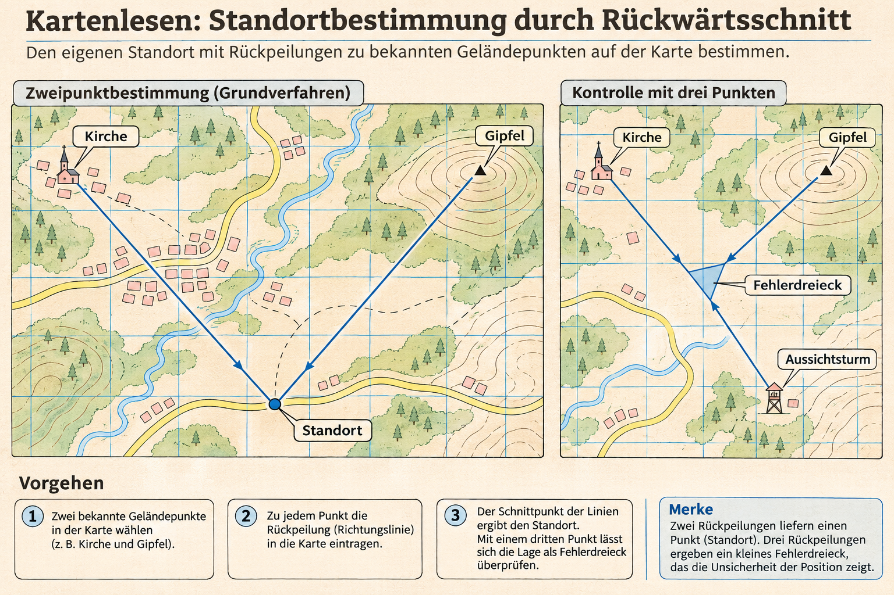
6. Andere in die Karte einweisen
6.1 Kontext schaffen
Bevor du einen einzelnen Punkt erklärst, gib allen denselben räumlichen Bezug: In welchem Gebiet befinden wir uns? Welche Orte oder markanten Geländepunkte sind zu sehen? Um welchen Kartenausschnitt geht es, und wo liegt Norden? Richte die Karte bei Bedarf gemeinsam aus und nenne einen gut erkennbaren Bezugspunkt. So können alle Beteiligten der Erklärung folgen, bevor du genauer auf einen Einsatzort oder eine Koordinate eingehst.
Zeige Stellen auf der Karte nicht mit der Hand oder dem Finger. Sie verdecken Details und sind für mehrere Personen schwer gleichzeitig zu erkennen. Nutze stattdessen ein geeignetes Hilfsmittel, zum Beispiel einen Stift mit abgerundeter Spitze, einen Zeigestab oder ein Lineal.
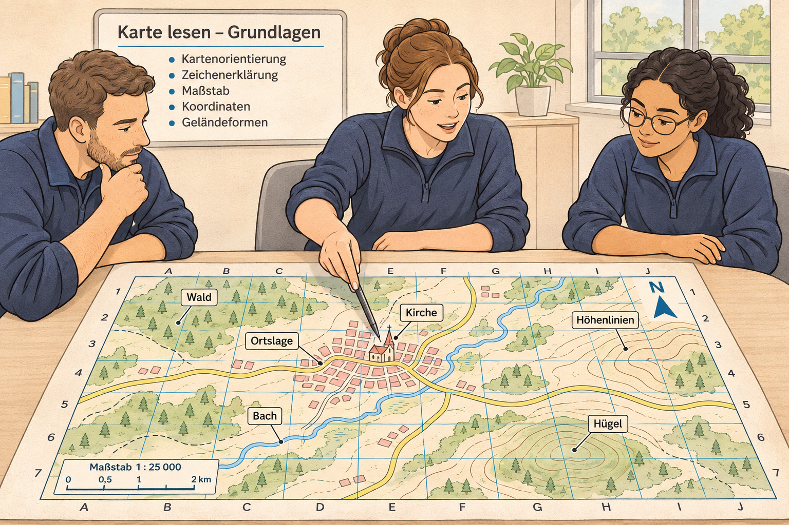
7. Exkurs: Skizzen erstellen
Platzhalter – Inhalt folgt. Eine Einsatzskizze kann maßstäblich oder ohne Maßstab (o. M.) angefertigt werden. Sie enthält immer einen Nordpfeil. Straßennamen und weitere Beschriftungen werden in VERSALIEN eingetragen.
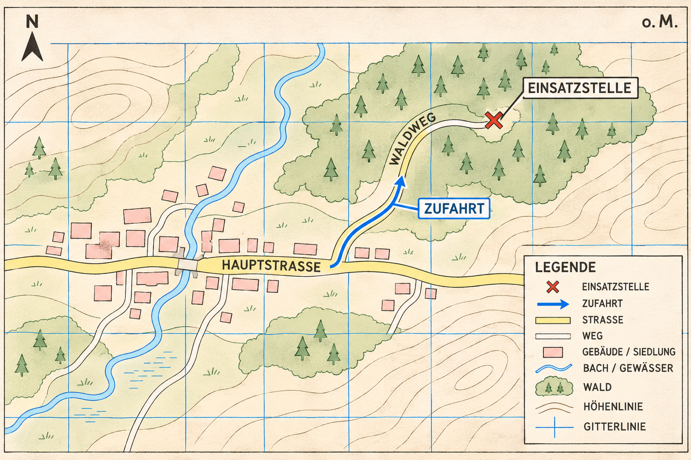
Übungen
Beispielübungen in Jever öffnen
Die Beispielaufgaben werden mit ihren gespeicherten Einstellungen im Übungsbogengenerator geladen und können dort angepasst werden.
Unsortiert TODO
- Nummerierung der Bundesautobahnen (BAB) in Ost-West- und Nord-Süd-Richtung erklären.